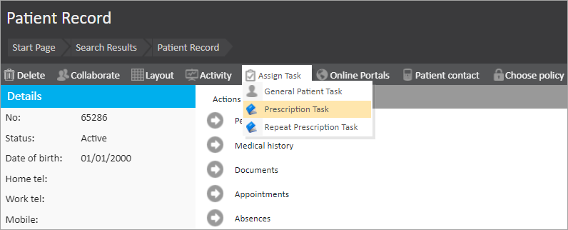
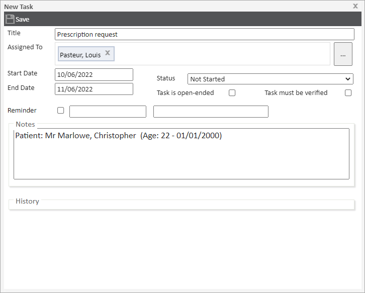
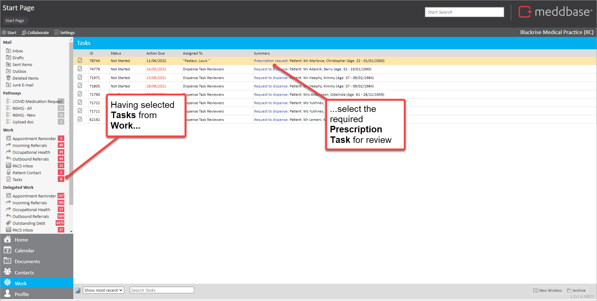
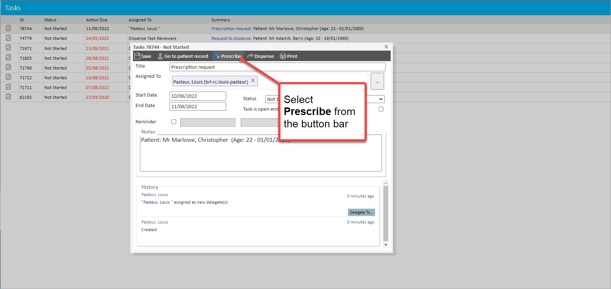
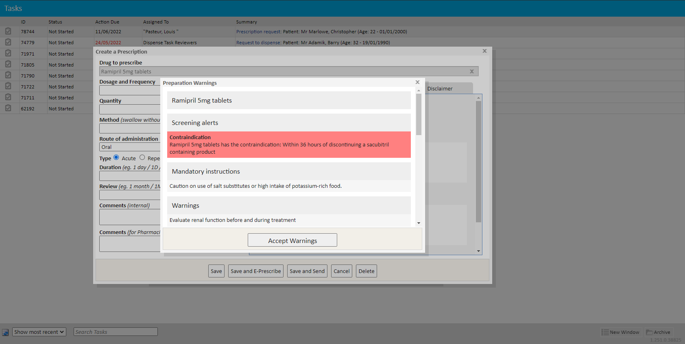
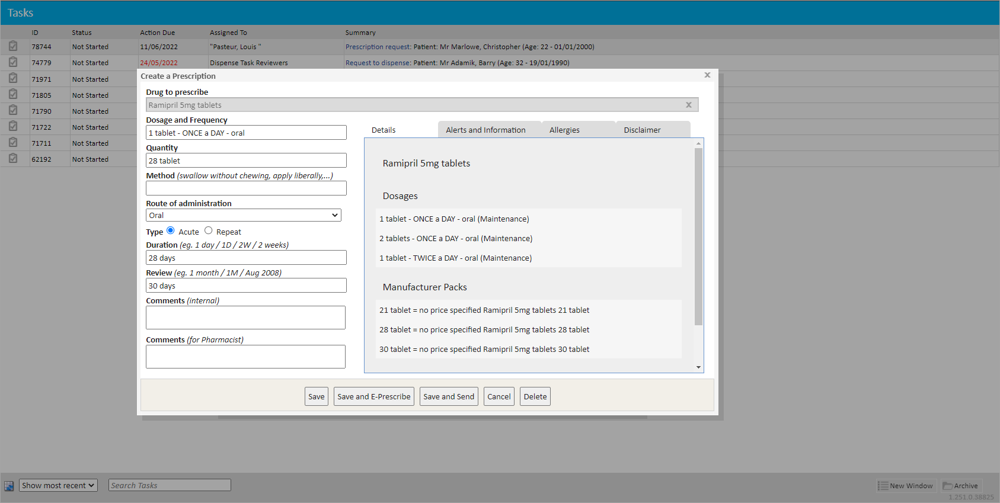
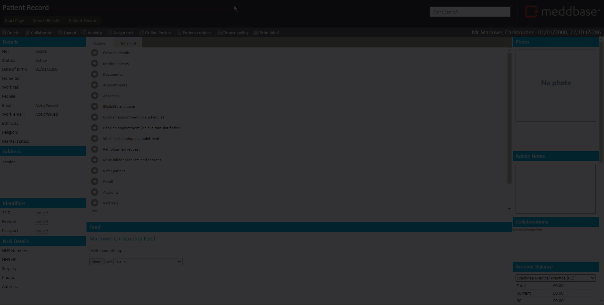

Meddbase users have the ability to create tasks that facilitate various workflows, including generating prescriptions outside the context of an appointment. These tasks streamline the prescription process and ensure efficient management of repeat prescriptions.
This article provides a step-by-step guide for managing Prescription Tasks in Meddbase. It outlines:
By following this guide, users can ensure accurate and efficient prescription management while maintaining compliance with system capabilities.
There are some pre-requisites required to enable this process:
You can do this as follows:


The Prescription Task is created and added to the Tasks list for the relevant user(s).
After a Prescription Task has been created, these can be reviewed and actioned.
To do this:



The system does not undertake any form of dose-range checking, and it is subsequently the Prescriber's responsibility entirely, to verify that prescribed dose values are clinically appropriate for a given patient.

There is a range of actions offered at the bottom of the dialog as buttons. These are explained in the table below.
| Button | Outline explanation |
| Save | Creates a prescription record for the patient. When created, the prescription is logged in the Medical History of the patient. |
| Save and E-Prescribe | By selecting this option, a Send electronic prescription dialog is presented. This enables the production of an ePrescription using the Medication Delivery feature. When created, the prescription is logged in the Medical History of the patient. |
| Save and Send | Creates a prescription record for the patient and enables a printout of the prescription to be produced. When created, the prescription is logged in the Medical History of the patient. |
| Cancel | Closes the Create a Prescription dialog and returns to Prescription Task Dialog. |
| Delete | At this point, if the Delete button is selected an advisory message appears saying that a prescription has not been created to delete. Once a prescription is created and edited, this button enables you to mark the prescription as deleted (although it is visible in the ‘Deleted’ section of the Medical History). |
When the Prescription has been produced, the underlying Task dialog should be displayed again.
The Task is then marked as completed and no longer displayed in the Tasks list.
The video below shows how to create the Prescription Task for a patient and then create a Prescription from the task.
